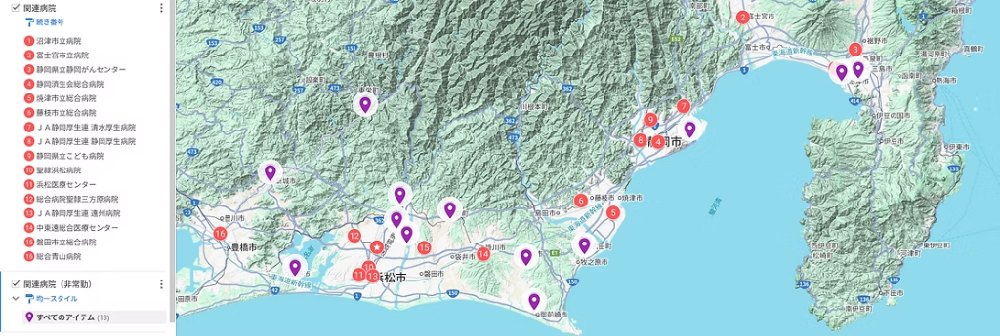

関連病院・連携施設
静岡県全域から愛知県東部にわたるネットワークを構築し、
各地域の中核病院において質の高い耳鼻咽喉科・頭頸部外科診療を提供しています。
※ 太字で記載された医師は専門研修指導医です
関連病院・連携施設 配置マップ

静岡県東部
沼津市立病院
佐々木 豊、井藤 雄次、松田 知樹、宮嶋 佑
富士宮市立病院
足守 直樹、猪瀬 祐気、櫻井 絢矢
静岡県立静岡がんセンター
林 暁利、別所 祐樹
聖隷沼津病院
静岡県中部
静岡済生会総合病院
武林 悟、望月 大極、遠藤 志織、下平 有希、寳積 志帆、田中 裕太郎
焼津市立総合病院
石川 竜司、秋田 紗希、井上 有美、森福 宏、鈴木 ひな
藤枝市立総合病院
森田 祥、丹羽 彩、千野 帆夏
清水厚生病院
平岡 美由紀
静岡厚生病院
大輪 達仁
静岡県立こども病院
橋本 亜矢子
静岡市立清水病院
静岡県西部
総合病院聖隷浜松病院
岡村 純、松下 安理華、森 泰樹、中村 友樹、渡邉 尚喜、濵野 一太、仲地 真海、山口 真央
浜松医療センター
荒井 真木、水田 邦博、大石 宏虎、植田 翔
総合病院聖隷三方原病院
野田 和洋、南條 茉央、上村 広希、藤森 拓、堀井 彩花
遠州病院
浜田 登
中東遠総合医療センター
杉山 夏樹、竹内 実喜子、松下 賢悟、中嶋 慎太郎
磐田市立総合病院
新村 大地、泉 智沙子、服部 大地、大野 智里
共立湖西総合病院、榛原総合病院、御前崎総合病院、菊川市立総合病院、公立森町病院、浜松赤十字病院、浜松市立療育センター附属診療所、天竜病院
愛知県東部
青山総合病院
種田 泉
新城市民病院、東栄医療センター
その他（連携・関連施設）
主な連携医療機関・大学
- 岩手医科大学
- 自治医科大学
- 昭和大学
- 名古屋大学
- 藤田医科大学
- 京都府立医科大学
- 関西医科大学
- 静岡赤十字病院
国内研修先所属（特別枠）
- 東京慈恵会医科大学 増田 守 （国内研修）
- 国立国際医療センター 池羽 宇宙 （国内研修）